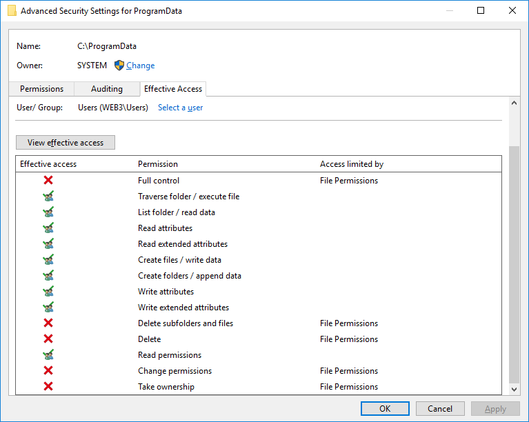
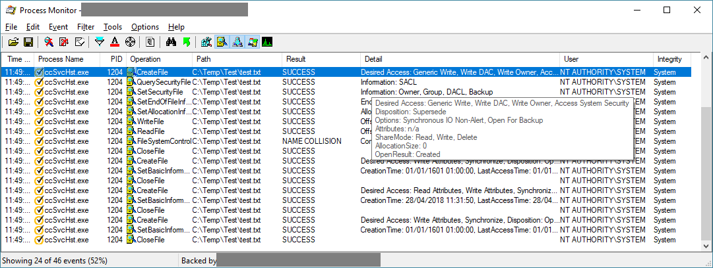
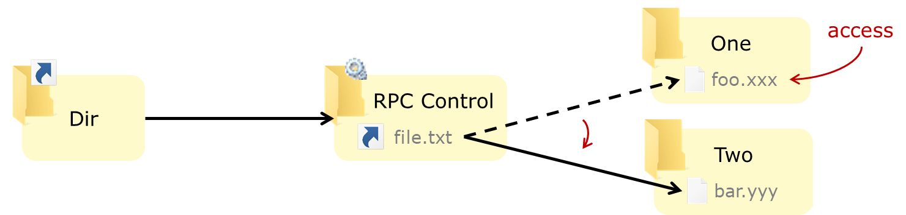
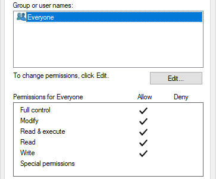
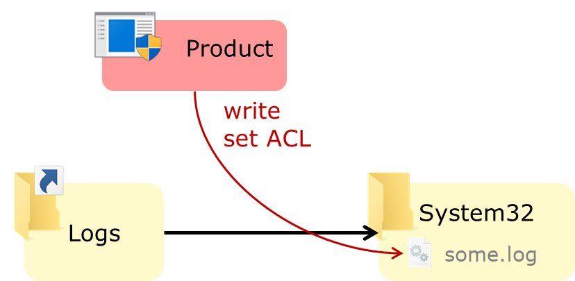
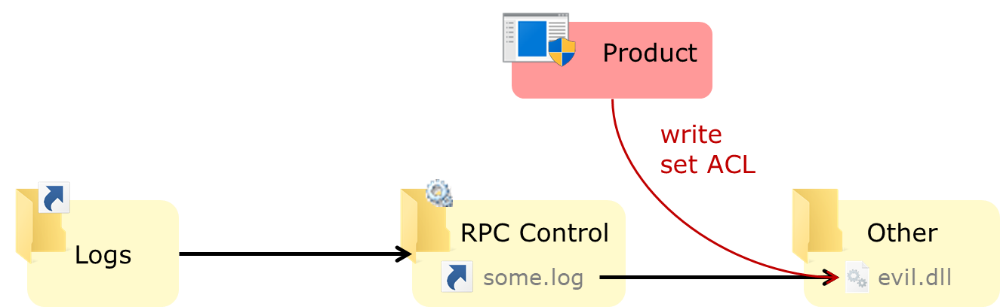
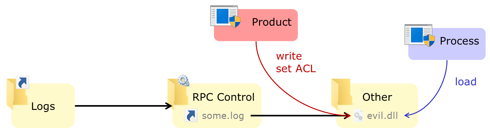
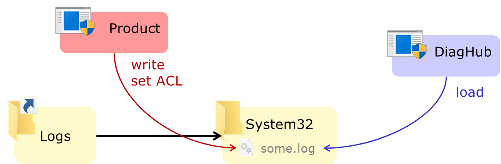
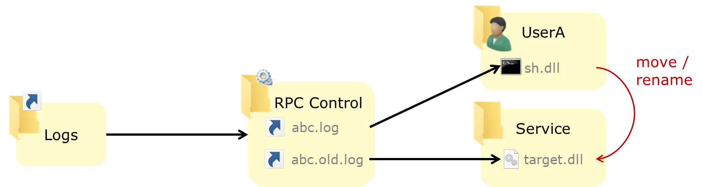
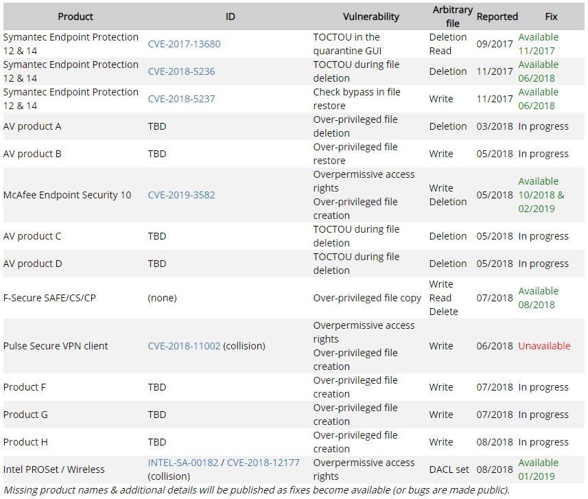

Windows特权文件的操作滥用
这篇文章（稍微有点长）介绍如何利用Windows特权进程的文件操作实现本地权限提升（从用户级到管理员/系统级），并展示利用这类bug的技术、工具和详细步骤。
翻译自：https://offsec.provadys.com/intro-to-file-operation-abuse-on-Windows.html
特权文件操作的Bug
高权限进程对文件的操作过程和普通进程没啥区别。但是，当高权限进程访问没有足够保护的用户文件或目录时，就可能造成安全漏洞。因为我们有可能利用该特权进程执行一些本不该有的操作。有很多利用特权访问用户控制资源引起漏洞的案例，通过文件的方式只是其中之一。
渗透师们熟知的方法有：用户修改某服务的预执行文件和DLL注入——如果我们能对某特权服务即将执行的文件做写操作，或者有它寻找DLL的目录的写权限，我们就能在这个特权进程里执行攻击代码，这是一个熟知的漏洞。对于最高权限进程，除了预防偶然性的配置错误外，再就是预防这一点了（但愿能做到）。
但是，其他一些潜在的文件系统操作滥用似乎并不为人所知，它们同样危险：如果你能让一个特权进程创建、复制、移动或删除任意文件，那么高贵冷艳的SYSTEM shell也就离你不远了。
另外，由于这些是逻辑漏洞，它们通常非常稳定（不涉及内存损坏），在代码重构后会依然存在（只要文件操作逻辑不变），并且不管处理器架构如何，利用方式完全相同。这些特征使它对攻击者很有价值。
寻找（部分）漏洞
用户可写路径
尽管大多数特权程序不会直接操作非特权用户的文件（有些例外：如杀软），但它们很多会操作一些用户能访问路径下的文件。非特权用户具有写权限的常见路径有：
- 用户自己的文件和目录，包括其
AppData和Temp目录，如果你够好运或开着杀软，某些特权进程可能会用到它们。 - 公共用户的文件和目录：同上。
- 使用默认ACL时，在
C:\下创建的目录：默认情况下，在分区根目录下创建的目录，用户拥有写入权限。 - 使用默认ACL时，
C:\ProgramData的子目录：默认情况下，用户可以创建文件和目录，但不能修改现有的文件和目录。这也是通常第一个要看的地方。 C:\Windows\Temp的子目录：默认情况下，用户可以创建文件和目录，但不能修改现有文件和目录，也不能读取其他用户创建的文件或访问目录。可以在这里查看安装包和定时运行的其他特权软件或脚本，但无法查看已经存在的文件和目录。
你可以使用工具和命令（例如SysInternals的AccessChk，icacls或PowerShell的Get-Acl）或资源管理器的“安全”选项卡来查看文件权限：“高级”选项里的“有效访问”选项卡，里面列出了特定用户或组关于当前文件或目录的访问权限（和AccessChk在命令行上运行的结果一样）。下图展示了Users组在C:\ProgramData目录上被授予的（默认）访问权限：

寻找特权文件操作
要查找由特权进程执行文件操作的实例，我们可以简单地使用SysInternals的ProcMon，过滤掉不感兴趣的进程的文件活动。当它访问用户可控的文件和目录时，我们可以查看该进程是否使用了模拟功能（用了会在“详细信息”中显示）。有时它没有使用：

当然，它只能告诉我们进程自己执行的操作（例如，当它启动时）。想要更多信息，我们必须查看非特权用户执行的操作。如果它有UI则直接查看，或者间接通过COM、LPC、网络接口和其他暴露的攻击面查看。有时还要对产品做逆向处理（这篇，这篇，还有这篇都是很棒的参考文章），而本文只讲一些简单技术。
利用技术和工具
一旦发现特权进程在用户的或用户可控制的文件和目录上执行了某些文件操作，我们可以劫持这些操作来做些有趣的事情。
好消息是，James Forshaw（@tiraniddo）对NTFS系统和Windows组件做了许多开创性的研究，并将结果发布在了博客里。（快选导航：符号链接，硬链接，NTPathConversion，DirCreate2FileRead，FileWrite2EoP，AccessModeMismatch）并在Infiltrate、SyScan等会议上做了演讲。他提出了几种利用Windows文件系统和路径解析特性的技术（大致总结如下），并在开源的工具包symboliclink-testing-tools和NtApiDotNet库中实现了它们。他的技术和工具包为许多渗透人员（包括我）打开了寻找此类漏洞的大门。有了这些工具，利用过程变得简单，本地提权变得愈发容易。
NTFS交叉点
NTFS的交叉点特性允许将目录设置成文件系统的挂载点，类似于Unix中的挂载点。它还可被设置解析到其他目录（两者在相同或不同的文件系统中）。这里可以把它看做一种仅限目录使用的符号链接。
有趣的是，在大多数情况下，路径将依照交叉点透明地进行解析（除非明确设置了参数来阻止这一情况）。因此按照上面的设置，某个程序在尝试打开C:\Dir\file.txt时实际上打开了C:\Other\file.txt，因为IO管理器也要跟踪交叉点。
交叉点可以由非特权用户创建。它们都是跨卷工作，你也可以将C:\Dir“重定向”到D:\OtherDir中。如果拥有某现有目录的写权限并且它内容为空，就能将它转化成一个交叉点。
NTFS交叉点通过重解析点实现，内置工具是不允许你这么做的。但我们可以设置自定义重解析点，从而让交叉点解析为任意路径。 CreateMountPoint工具（来自symboliclink-testing-tools）能够做到这点。对于常规交叉点，还可以用mklink或PowerShell的New-Item命令带上-Type Junction参数来实现。
硬链接
与在Unix中一样，非特权用户也可以创建硬链接，作为现有文件的附加路径。但它不适用于目录或跨卷（对于硬链接来说意义不大）。
此外，内置工具不允许用户创建的硬链接指向没有写权限的文件，但实际上，系统调用却允许利用一个打开待读的文件来创建硬链接。使用symboliclink-testing-tools（或Ruben Boonen编写的PowerShell脚本）中的CreateHardLink工具可以创建指向没有写权限的文件的硬链接。请注意，如果你没有该文件的写权限，就无法删除创建的硬链接（同理，你无法删除原始路径下的文件）。
对象管理器符号链接
虽然NTFS提供了文件系统符号链接，但在Windows上，非特权用户无法在文件系统上创建符号链接：它需要SeCreateSymbolicLinkPrivilege，默认情况下仅被授予管理员。
但是，非特权用户可以在Windows的对象管理器中创建符号链接。顾名思义，对象管理器可以管理诸如进程、分区和文件之类的对象。对象管理器在驱动器号和与设备相关联的命名管道中使用符号链接。用户可以在可写对象目录（如\RPC CONTROL\）中创建对象符号链接，这些符号链接可以指向任意路径——包括文件系统中的路径（无论该路径存在与否）。
当NTFS交叉点与对象符号链接组合时最为有趣。实际上，作为一个无特权用户，我们可以创建一个挂载点解析到\RPC Control\，该目录下包含一个对象管理器符号链接：

这样我们构造了一个像文件系统符号链接的东西：上图中，C:\Dir\file.txt被解析为C:\Other\stuff.any。这当然不是完全等同的，但在很多情况下，它足以利用程序了。
可以使用CreateMountPoint和CreateDosDeviceSymlink分别执行这些步骤，但CreateSymlink工具一条命令就完成了以上步骤。
机会锁
机会锁（简称oplock）是这样一种锁：它可以被放在文件上，当有其他进程识图访问该文件时上锁进程会收到通知——同时延缓这些进程的访问，以便上锁进程在开锁前将文件置于正确的状态。它的最初设计意图是缓存客户端——服务器用SMB协议通信的文件访问，可通过文件句柄调用特定的控制代码来在本地放置机会锁。
这对利用TOCTOU漏洞非常有用，因为你可以通过锁定一个进程识图打开的文件或目录而轻松赢得竞争。当然，这里面还有些限制：你无法让单独某个访问“通过”（因为一旦开锁所有被挂起的访问就会同时发生），并且无法通配所有类型的访问，但它依然是很有效的方法。
SetOpLock工具可以帮你创建锁并阻止其他进程对文件或目录的访问，直到按下Enter键来释放锁。它允许选择读锁、写锁或者独占型机会锁。
James再次将这种技术与之前的技术相结合，创建了一个强大的原语来简化对某些TOCTOU漏洞的利用：通过设置伪符号链接（如前所述）并在最终文件（符号链接的目标）上放置一个机会锁，我们可以在打开目标文件时更改符号链接（即使目标文件被锁，符号链接却没被锁），使其指向另一个目标文件：

上图中，第一次访问文件C:\Dir\file.txt将打开C:\One\foo.xxx，第二次访问将打开C:\Two\bar.yyy。
BaitAndSwitch工具使用独占型机会锁实现此技术，如果你需要读、写锁，可以使用SetOpLock和CreateSymlink。
利用策略
经典栗子
假设产品X存在以下行为：
在
C:\ProgramData\Product\Logs中创建日志文件（对该目录的访问权限来自默认/继承）日志文件由特权（系统）和非特权（用户）进程创建/写入
创建日志文件的过程设置了详细的ACL，允许每个人写入文件（并在需要时反转它）：

这就造成了漏洞，可以用它创建任意内容的任意文件。
如果删掉现有的日志文件，并将Logs目录转换为C:\Windows\System32的交叉点（由于从C:\ProgramData继承了访问权限），产品X的特权进程将在System32目录中创建它的日志：

还可以利用使用符号链接技术来转移特定的日志文件（例如some.log），这样攻击者就能创建自定义名称的文件。例如，在程序目录中创建一个DLL文件：

由于特权进程在日志文件上设置了开放的访问权限，因此我们能肆意更改文件的内容。
多个产品上都出现过这个问题，大概因为它是一个常见需求的简单实现（所有组件都可写入日志文件——用户和系统组件、所有组件的通用日志写入代码块）。在过去的一年中，我们见到过以下了几起案例：
- Cylance 作者：Ryan Hanson
- Symantec / Altiris agent 作者：Ben Turner
- McAfee Endpoint Security (已修补)
- NVIDIA GeForce Experience 以及Intel Driver & Support Assistant 作者：Mark Barnes
- Pulse Secure VPN client (未修补) (报告collision 作者：Matt Bush)
从任意文件写入到权限提升
当你能在任意文件写入时，要想在特权进程的上下文中执行代码，有两种首选技术：
- DLL劫持：在一个特权进程加载DLL文件的目录下创建DLL（比如在应用程序的目录中，在
System32，Windows或其他的SYSTEM的％PATH％目录中）。这需要以某种方式（重新）启动该特权进程以加载有效的负载，以及一个在DLL劫持之前会被加载的目录。 - 覆盖：替换现有的二进制、脚本、配置文件等来实现代码执行。除了要求（重新）启动进程外，还需要文件写入操作来覆盖现有文件（目标文件还不能被锁定），这种方法通常特定于指定的服务/应用程序。

至少有两种鲜为人知的技术：
- 在一个32位的特权进程中使用
C:\Windows\System32\Wow64Log.dll加载64位DLL。默认情况下，此DLL不存在（至少在买家版本上），并且会在所有32位进程中加载。但是，DLL不能（总是如此吗？）使用Kernel32导入，因此它只能使用NTDLL API，当然前提是你有一个（特权的）32位进程来注入（以及重启该进程的方法）。 AFAIK这个技巧是由George Nicolaou（我能找到的第一个参考资料）发现的，并由Walied Assar发表。 - 使用“诊断中心标准收集器服务”：这个技术是由James Forshaw发现的，在GPZ博客中做了解释，并在这个漏洞研究中用做示例利用代码。这篇文章很值得一读，但如果你赶时间（还请把它添加到你的阅读列表中），文章要点是：诊断中心服务（以
SYSTEM身份运行）会将System32中的任何扩展名文件当做DLL加载。因此，如果能在System32中创建一个包含攻击代码的test.log文件（当然，文件内容必须是一个能用的DLL），就能将该DLL加载到特权服务中。但是，这项技术在Windows 10中被修补掉了。

控制内容
这些技术都要求能控制所创建文件的内容：如果你能让文件被创建到任意位置，但无法控制其中的内容，那它的用途将非常有限。在之前的示例里，特权程序为生成的文件设置了一个宽松的ACL，如果没有这种宽松条件又该如何呢？
此时可以关注一些别的操作。在日志记录案例中，假定应用在日志达到固定大小后轮换日志，其特权进程可能会移动或重命名日志文件（例如，从abc.log到abc.old.log）。我们可以用符号链接做以下操作：
- 通过伪符号链接将被重命名/移动的源文件替换为我们的攻击负载（
sh.dll） - 通过伪符号链接将目标文件替换为我们要创建或替换的文件（此处为
target.dll）
因此，当日志重命名发生时的情形如下：

当特权进程尝试将abc.log移动或重命名为abc.old.log时，它实际上会将用户拥有的sh.dll文件移动/重命名为target.dll，这样就将攻击负载放在了可执行的正确位置。
所以，可控的特权文件的移动/重命名/复制操作也是非常有趣的原语：
- 受控的移动或重命名操作允许我们写入任意文件
- 同样适用于完全受控（源和目标）的副本
- 源可控而目标不可控的复制操作允许我们读取任意文件（如果目标位置是用户可读的）
- 源可控而目标不可控的移动/重命名操作允许我们任意删除文件
附注：
- 能否覆盖目标文件取决于执行操作的进程的选项
- 如果目标文件已经存在，使用硬链接而不是伪符号链接同样奏效
- 任意文件读取的常见利用方法是获取
SAM，SECURITY和SYSTEM单元来转储SAM数据库和缓存凭据
从任意文件删除到权限提升
已经探讨了如何从任意文件读写来提权，那删除又有什么用呢？除了明显的可以用来DoS，有时可以删除以下文件来提权：
- 可写入的目录中的文件，即使存在于我们无法覆盖的现有目录，例如
C:\ProgramData - 稍后将会被特权进程（不管它是否为执行任意文件删除的进程）读取或写入
例如，如果有办法让进程将C:\ProgramData\Product\foo移动/重命名为C:\ProgramData\Product\bar，但这俩文件已经存在且没有写入权限，我们可以使用任意文件删除漏洞来删除foo和bar，并自己重新创建它们（再次假设Product的子目录采取了默认权限）。接着用之前的技术来借助写操作（如果Product目录目前为空则用伪符号链接，其他情况用硬链接）完成攻击链。
利用杀毒软件
AV软件是此类漏洞攻击的主要目标，因为它们有高权限，而且出于设计必须操纵文件（包括用户拥有的文件）。特权进程执行扫描、删除、恢复操作都可能被劫持而执行一些有趣的文件操作，这就将防御组件变成了潜在的威胁（当然，这只是增加了AV攻击面的高度，任何人在部署AV前都应该仔细权衡它的风险—收益比）。
杀软隔离和恢复
隔离和恢复功能可以有妙用，特别是当它们可以由非特权用户触发时（有时不通过UI，而是利用COM劫持实现）。触发隔离（或删除）功能的最简单方法当然是将已知的恶意文件（如EICAR）放到文件系统上。
有趣的是，有些AV会在删除之前对检测到的文件执行特权操作，例如：
- 在同一目录中创建/删除临时文件
- 在用户可写的目录中复制或移动被感染的文件
- 将被感染的文件复制或移动到用户可读的隔离位置（如果要利用这点，请注意不要拿你的
SAM文件做实验）
临时和隔离文件有时会被编码且/或被填充，如果你想查看算法（或者读取生成的文件），除了打开IDA/Ghidra，还可以把它扔到Hexacorn的DeXRAY里检查一番。
如果非特权用户可以触发恢复操作，就会是另一个特权文件写入漏洞的实例。若想控制内容，要么在删除或恢复过程中查找潜在的TOCTOU，要么使攻击载荷足够“恶意”从而一出现就被隔离。
转移文件删除/隔离
有个好玩的姿势是：如果AV从检测到恶意文件到删除/隔离（或以其他方式阻止访问）的过程没有上锁（TOCTOU）。我们可以在文件被删除之前用交叉点替换其所在的父目录。如果想删除一些无权访问的文件（例如，C:\Windows\System32\license.rtf），可以这样做：
- 在我们创建的目录中放置一个与目标文件相同名称的EICAR（或者其他会被AV检测到的文件），例如
C:\Temp\Test\licence.rtf - 等待AV检测到它
- 删除或重命名父目录
C:\Temp\Test - 将其替换为
C:\Windows\System32的交叉点 - AV删除
C:\Temp\Test\licence.rtf会被解析为C:\Windows\System32\licence.rtf
最恰当的方法是使用机会锁，但现实中也没那么简单，因为文件在被删除之前可以被访问（可变）多次，缺乏细粒度的控制让这一点变得很棘手。一种简单粗暴的的方法是简单地在目录旁创建交叉点，并写一个循环来不停交换两者。由于AV寻找路径和删除文件方式的不同，我们可能有机会删除掉交叉点，必要时可以重复这一操作。 （剧透：在几款AV产品下管用了，但其他产品没有。）
显然，以上方法不太隐蔽，但是如果没有配置合适的事件转发服务，你要找的第一个文件可能还是事件日志 :)
已知漏洞
去年年初我们在常见的软件产品中发现了几个这样的漏洞，并报告给了向各自的供应商，其中一些已经发布了补丁。下表总结了发现的漏洞及当前状态：

部分漏洞详情：
结论
我希望本文能够让一些新人开始寻找与文件相关的逻辑提权漏洞，另外，供应商和开发人员也能针对此类漏洞加强/修复他们的产品。
感谢James Forshaw为我们展示了这高超的技术，感谢那些反馈及时的供应商（特别是F-Secure安全团队），感谢Grehack和TROOPERS允许我在会议上公开它。感谢我的同事，是他们帮我准备了演说和本文。